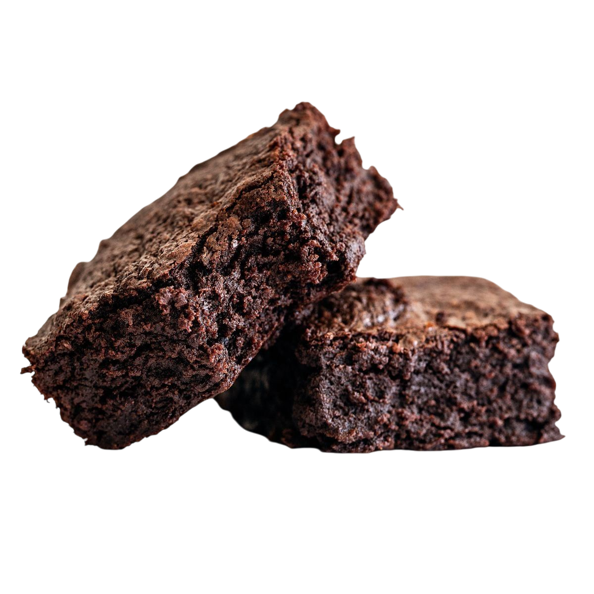

Brownies de Chocolate
La receta perfecta para brownies húmedos, densos y con esa costra fina y crujiente en la parte superior. ¡Puro chocolate!
⏱️ Tiempo total: 50 min
🍴 Porciones: 16
💪 Dificultad: Fácil

Ingredientes
- 1 taza de mantequilla sin sal.
- 2 tazas de azúcar granulada.
- 1 taza de azúcar moreno (para fudgy).
- 4 huevos grandes.
- 1 cucharada de extracto de vainilla.
- 1 taza de cacao en polvo de buena calidad.
- 1 taza de harina de trigo, tamizada.
- 1/2 cucharadita de sal.
- 1 taza de chispas de chocolate (opcional).
Preparación
- Paso 1: Derretir. Precalienta el horno a 175 grados. Engrasa un molde cuadrado y cúbrelo con papel de hornear. Derrite la mantequilla y el chocolate (si usas) a baño María o en microondas. Deja enfriar ligeramente.
- Paso 2: Húmedos. En un tazón grande, mezcla el azúcar granulada y el azúcar moreno con la mezcla de mantequilla derretida. Agrega los huevos uno por uno, batiendo bien después de cada adición. Incorpora la vainilla.
- Paso 3: Secos. En un tazón aparte, mezcla el cacao, la harina y la sal. Agrega los ingredientes secos a los húmedos y mezcla suavemente solo hasta que se incorpore. No mezcles en exceso. Si usas, añade las chispas de chocolate.
- Paso 4: Hornear. Vierte la mezcla en el molde preparado. Hornea por 30-35 minutos. El centro debe lucir casi cocido, pero un palillo debe salir con migas húmedas (no masa cruda).
- Paso 5: Enfriar. Saca del horno y, muy importante, deja enfriar completamente en el molde antes de cortar (al menos 2 horas). Esto asegura la textura fudgy.